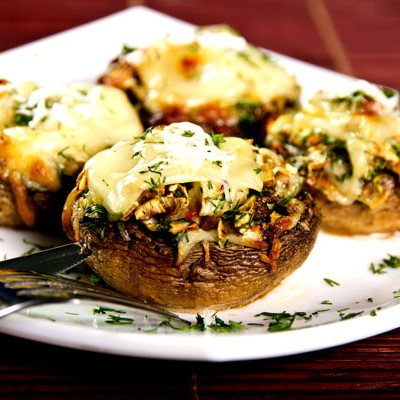

Előétel
Kattints ide, hogy többet megtudj róluk!
Az ebéd aloldalon a különböző alkategóriák között böngészhetsz. Ha éppen nem egytálételt keresel, itt megtalálhatod az ételeket típusokra bontva.
Tehát ha például konkrétan főételekre vagy esetleg köretekre vagy más típusú ételekre vágysz, itt megtalálod azokat könnyen átlátható rendszerezésben. Ez segít abban, hogy gyorsan és hatékonyan megtaláld azokat az ételeket, amik éppen számodra érdekesek vagy kívánatosak lehetnek az ebédhez